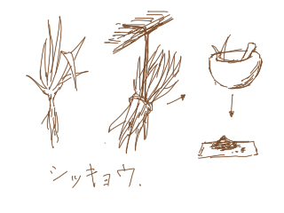
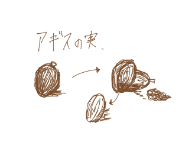
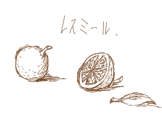
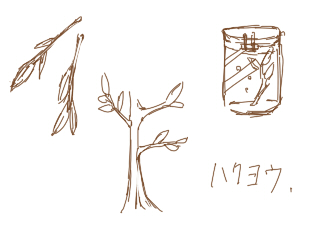
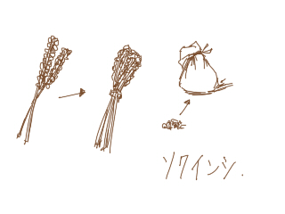
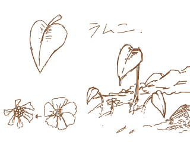
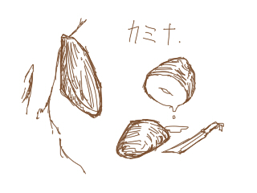
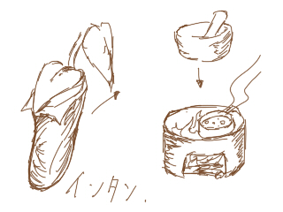
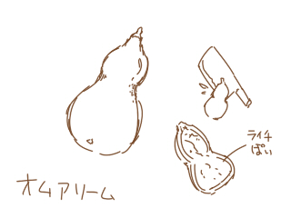
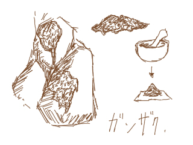

レア度1
レア度2
シッキョウ
 薬草と言うものの、大部分を占めているのがコレ。 外傷には力強い味方になる。 効能は痛み止め、止血、殺菌、治癒と、多少の解毒作用がある。 これに光の元素と魔力を込めて治癒薬となる。 ちなみに病気にはあまり効果がない。 不可食/薬草
ヌノシラズ
不思議な名前だが、由来は足が疲れず、敷き布で座らずとも歩けることから。 身体の疲れを取り、血行促進し足のむくれを取る。(疲れの原因となる乳酸も溜まらなくなる) 腹にはたまらないが、旅のお供に必須な薬草(実)のうちの一つ。レア度3
アギスの実
 とても苦いが腹持ちの良い木の実。 殻に包まれており、種と実が別々にあるのも特徴。 酸で種が溶けてしまうのを防ぐ為と思われる。 栄養価はそこそこ高く、味を気にしないなら良質な旅の食料となる。 また、その苦さと独特の香りが好きだという者も多い。 食+600 水-100
レスミールの実
 レスミールはその木の近くに近づくだけですぐ分かる。 何故ならとても甘い香りがするからだ。 だが、甘い香りと裏腹にその実は酸っぱく、そのまま食べることはできない。 なので基本的に砂糖漬け、はちみつ漬けなどに加工される。 また、レスミールは砂糖に漬けておくと酒になり、レスミール酒となる。 迷いの森だけでなく大陸各地に生えており、 栽培もできるので街の酒場では必ずお目にかかれるだろう。 不可食/料理
ハクヨウ
 文字通り白い葉の薬草。 シッキョウと比べて治癒能力は無いが解毒作用が強い。 また、病気に非常に強い効能を示す。 煎じるのではなく、水に漬けて効用を染み出させる。 シッキョウの次に流通しているもの。 不可食/薬草
ソクインシ
 とても良い香りのする香草の一種。 精神状態を安定させ、また気付け効果もある。 大半は香水になったり家に飾られたりする。 しかし効能も強く、冒険者なら１本は持っておきたいところ。 不可食/薬草、料理
レア度4
ラムニの葉
 葉っぱは大きなハート型の形をしており、花は白い。 ただ、その葉は噛むととても辛く、 とてもじゃないが単体で食べることはできない。 ラムニの自生する場所は綺麗な渓流であり、 そこでとれる魚アムグックに巻いて蒸し焼きにするととても美味とされる。 もちろん食べるときはレスミールの実の汁をかけてお召し上がれ！ 不可食/料理
ラムニの実
噛み潰すとピリリと辛く、独特な香りを持つ。 香辛料の材料にもなり、その実を潰すととても良い香りと適度な辛味がある。 乾燥させすりつぶしたものは香辛料として売られている。 不可食/料理カミナの葉
 キリナルの大陸全体に生えている木。 スノータイラスには生えないが、バルナーゴルにはいくらか生えている。 寒さに弱く、しかし乾燥にはとても強い。 その木は実をつけることが無いが、 その葉は甘く、とても厚く、水分を多く含んでいる。 食+200 水+400
インタン
 ハエ取り草の一種。 使うのを憚るものもいるが、効能は折り紙つきである。 効能は滋養強壮、また強い毒耐性を持つ。 そのまま擦り潰し使うには体に毒なので、煎じる必要がある。 不可食/薬、毒
レア度5
オムアリーム
 古代語で黄金の果実の意。 金色のひょうたんのような形をしており、腐ったような匂いがするが 食べてみるととても甘くみずみずしい。 匂いが苦手だと言う人も多い。 食+500 水+700
ガンザク
 岩に生えている苔の一種。 希少価値があり高値で取引される。 また、珍味であり貴族達も欲しがる。 解熱作用と腹によく効き、さらに滋養強壮効果もある模様。 不可食/料理、薬